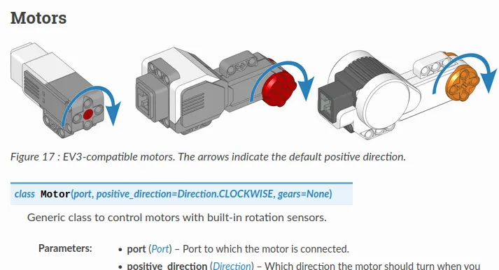
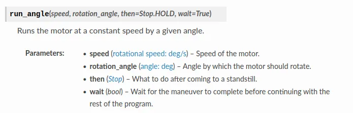

Move and Print
Here's a basic program that moves the robot and print some sensor values.
You can copy it into the Python tab in GearsBot (...replace all existing content), then switch to the simulator tab to run it. If running on a real robot, you need to make sure that all the motors/sensors are present and connected to the correct ports.
#!/usr/bin/env pybricks-micropython
# Import the necessary libraries
from pybricks.parameters import *
from pybricks.hubs import EV3Brick
from pybricks.ev3devices import *
from pybricks.tools import wait
from pybricks.robotics import DriveBase
# Create the sensors and motors objects
ev3 = EV3Brick()
motorA = Motor(Port.A)
motorB = Motor(Port.B)
color_sensor_in1 = ColorSensor(Port.S1)
ultrasonic_sensor_in2 = UltrasonicSensor(Port.S2)
gyro_sensor_in3 = GyroSensor(Port.S3)
# Here is where your code starts
motorA.run_angle(400, 200)
motorB.run_angle(-200, 200)
print(color_sensor_in1.rgb())
print(ultrasonic_sensor_in2.distance())
print(gyro_sensor_in3.angle())
Let's look at what each line does...
Hash Bang
#!/usr/bin/env pybricks-micropython
The EV3 is running a Linux operating system.
In Linux, the first line starting with a #! is used to indicate the type of script in this file.
In this case, it tells the operating system that the file is a pybricks-micropython program.
The Spike Prime doesn't need this (...it doesn't run Linux or any other operating system).
Imports
# Import the necessary libraries
from pybricks.parameters import *
from pybricks.hubs import EV3Brick
from pybricks.ev3devices import *
from pybricks.tools import wait
from pybricks.robotics import DriveBase
The line starting with a # is a comment.
It's for humans to read, and Python will ignore it.
The line starting with from are imports lines.
They import functions from different modules, and make them available for use in your program.
from pybricks.tools import wait imports the wait function from the pybricks.tools module.
from pybricks.ev3devices import * imports ALL the functions form the pybricks.ev3devices module (...the * means everything).
Initialize Motors and Sensors
# Create the sensors and motors objects
ev3 = EV3Brick()
motorA = Motor(Port.A)
motorB = Motor(Port.B)
color_sensor_in1 = ColorSensor(Port.S1)
ultrasonic_sensor_in2 = UltrasonicSensor(Port.S2)
gyro_sensor_in3 = GyroSensor(Port.S3)
This bunch of code create objects representing each motor, sensor, and hub.
ev3 = EV3Brick() creates an object representing the EV3 brick/hub, and assign it to the variable ev3.
You can change the name on the left to whatever you want, eg. fido = EV3Brick(), but the part on the right cannot be changed.
motorA = Motor(Port.A) creates an object representing a motor, and assign it to the variable motorA.
We pass in the parameter Port.A, to tell it that we want the motor connected to Port A.
As before, the name on the left is up to you, so left_motor = Motor(Port.A) is perfectly valid too.
At this point, you might be wondering where did we get the right hand side from.
Why is it Motor and not motor or LegoMotor?
The names on the right are Classes and we can find the available classes on the Pybricks documentation site.

The Motor class accepts up to 3 parameters, port, positive_direction, and gears.
For positive_direction and gears, we didn't specify them when creating our motor objects, so they'll just use the default values.
The port parameter doesn't have any defaults, so we MUST specify it or we will have an error.
Moving motors
motorA.run_angle(400, 200)
motorB.run_angle(-200, 200)
These two lines move motor A and motor B, one after the other.
run_angle() is a method in the Motor object.
There are many other methods available, and you should refer to the Pybricks documentation site to learn more.

From the documentation, you can see that the first parameter is the speed in deg/s. The EV3 large motor has a maximum speed of around 1000 deg/s, so 400 deg/s is about 40% speed.
The second parameter is the amount to turn in deg. In this case, the motor will turn 200 deg (...less than one rotation).
There are two more parameters that we didn't specify, then and wait.
The default value for then is Stop.HOLD, which makes the motor hold its stopping position as accurately as it can.
The default value for wait is True, which makes the program stop at that line until the movement is complete.
If we change it to False by writing motorA.run_angle(400, 200, wait=False), then as soon as motor A starts moving, the program will move on to the next line and motor B will start to move as well. (...try it and see)
For motor B, we set the speed to -200 which makes it go backwards.
Printing Sensor Values
print(color_sensor_in1.rgb())
print(ultrasonic_sensor_in2.distance())
print(gyro_sensor_in3.angle())
This group of code uses the print() function to print out the sensor values.
print() can be used to print a string or value.
Here's an example... print('hello world') this will print out the words hello world in the terminal.
color_sensor_in1.rgb() is a method in the ColorSensor object that returns the Red, Green, Blue values measured by the color sensor.
It is a tuple of 3 values.
ultrasonic_sensor_in2.distance() returns the distance measured by the ultrasonic sensor in mm.
It is a single numeric value.
print(color_sensor_in1.rgb()) prints out the result of the color_sensor_in1.rgb() method.
As always, read the Pybricks documentation site to learn about all the available methods.